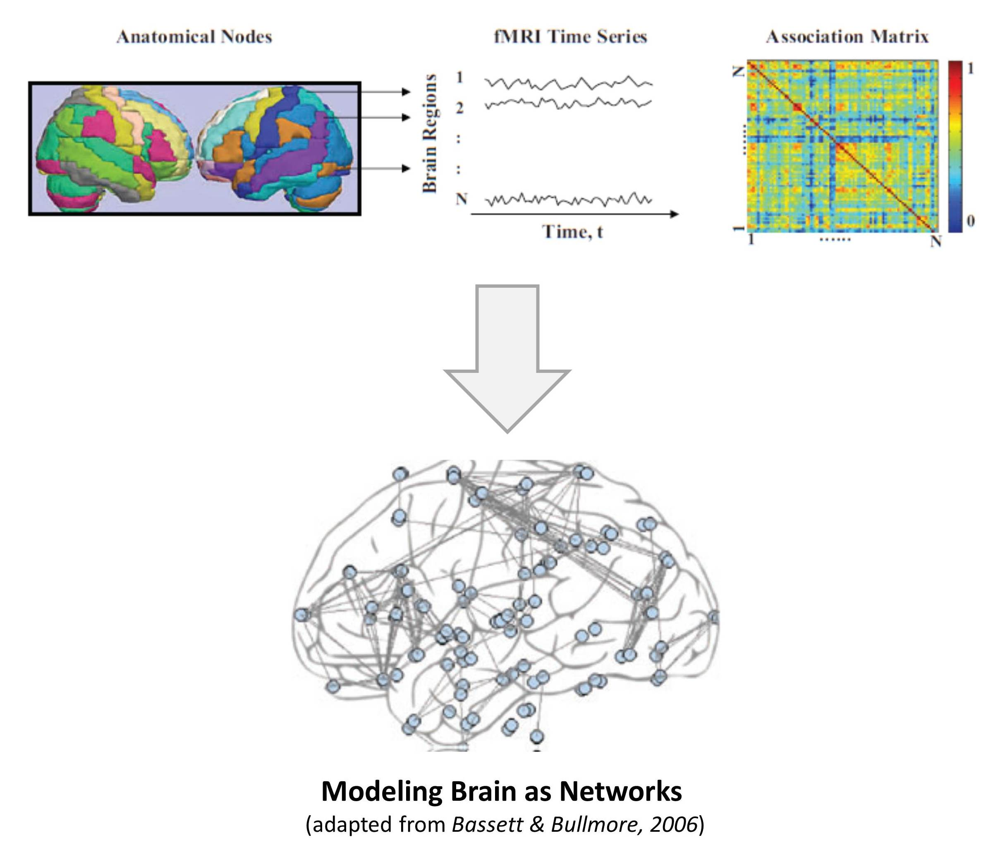

<!-- Page Content -->
<div class="container card" style="margin-top: 1em; min-height: 24em;">
  <div class="card-body">
    <h4 class="card-title">Brain Modelling</h4>

    <section id="content">
  
  <b>Brain as a complex interconnected system</b> <br>
  Brain is a complex organic system that operates through interactions among large number of neurons that are organized in functional modules and hierarchies. It could be viewed as a complex network of neurons or functional substructures subtly interconnected leading to the emergence of cognition. This nexus of networks can be modeled and analyzed using various approaches. One such approach that has recently gained much attention is network modeling. Modeling and analysis of the brain architecture as a network facilitates study of neuronal as well as functional connectivity patterns in the brain. One of the techniques employed for measuring functional activity of the brain is functional Magnetic Resonance Imaging (fMRI) which records the blood oxygen level dependent activities of brain. The fMRI data thus generated can be used to model patterns of connectivity within the brain, and further to compute properties of resulting networks. Network modeling of the brain has revealed the small world organization of brain networks, a property shared by diverse networked systems (including technological, biological and social networks). They are also characterized with exponentially truncated power law degree distribution, modularity, hierarchical organization, and distributed functional connectivity. <br><br>
  
   <br>
  
  <b>Feature detection for neurological disorders and framework for their diagnosis</b> <br>
  The neuronal as well as functional connectivity of the brain are affected under cognitive and emotional disorders characterized as dysconnectivity syndromes. The brain networks of patients with schizophrenia were found to have disrupted small-worldness, decreased modularity as well as local connectivity indicating hampered connectivity within the brain. Similarly, in autistic patients the networks were found to have altered functional connectivity in the default mode subnetwork. These findings exemplify inherent potential of graph theoretical modeling to characterize and distinguish brain disorders, thus prediction of their early onset. One of our We aims is to build a computational framework using machine to extract disorder specific features which could be used for accurate diagnosis and classifications of brain disorders.<br><br>
  
  <b>Modeling and control of memory</b> <br>
  Another area of our focus is that of modeling and control of memory. Memory is a faculty by which brain stores and remembers information. Much of what we know about the mechanisms of memory is inferred from relatively simple invertebrate and mammalian systems. Understanding neuronal coding for complex memory embedded in sparsely distributed networks is a challenge. Even with the latest technology it is challenging to trace and map billions of neurons, highlighting the importance of modeling. So far, memory has been modeled from various perspectives, viz. psychological, molecular, electro-physiological and connectionist. These models aim to classify memory, identify its molecular machinery and associated brain regions. In addition to modeling, control of this cognitive ability also has been of serious interest. We expect to provide better understanding of mechanisms of memory and computational strategy for repositioning of drugs for its control. <br><br>
    
  <i><b>References:</b></i> 
  <ul>
  <li>Bassett, D. S. and Bullmore, E. (2006). Small-world brain networks. The Neuroscientist: A Review Journal Bringing Neurobiology, Neurology and Psychiatry, 12(6), 512-23.</li>
  <li>Bullmore, E. and Sporns, O. (2009). Complex brain networks: graph theoretical analysis of structural and functional systems. Nature Reviews. Neuroscience, 10(3), 186-98.</li>
  <li>Friston, K. J., Jezzard, P., and  Turner, R. (1994). Analysis of Functional MRI Time-Series, 171, 153–171.
  <li>Liu, Y. et.al. (2008). Disrupted small-world networks in schizophrenia. Brain: A Journal of Neurology, 131(Pt 4), 945–61.</li>
  <li>Rubinov, M., and Sporns, O. (2010). Complex network measures of brain connectivity: uses and interpretations. NeuroImage, 52(3), 1059–69.</li>
  <li>Sporns, O., Chialvo, D. R., Kaiser, M., and Hilgetag, C. C. (2004). Organization, development and function of complex brain networks. Trends in Cognitive Sciences, 8(9), 418–25. </li>
  </ul>
  
  </section>

  </div>
</div>
<!-- /.container -->